点背景或按 Esc 关闭 · Liang Suyu Portfolio 2026
Portfolio — 2026 / 南宁 · 广西 · Nanning, Guangxi
Liang Suyu
设计师助理 · 服装设计方向Design Assistant · Fashion Design
艺术设计（服装方向）在读，2027 届。把概念做成能穿的结构——从情绪板、款式图，到人台立裁与成衣。
Profile
Art & Design student, fashion pathway, class of 2027. I turn concepts into wearable structure — from mood board and sketches to draping on the stand and finished garments.
B. 2006 · Nanning
Portfolio 2026
六组系列设计，六件立裁与成衣。点击任意一张可放大查看。Six collection sheets and six toile / garment pieces. Click any image to enlarge.
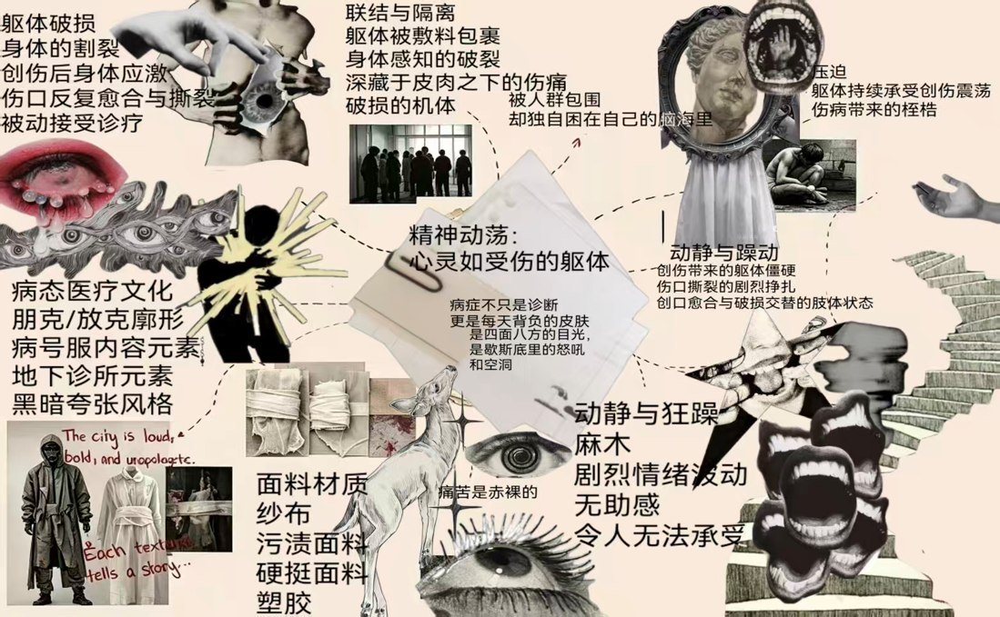
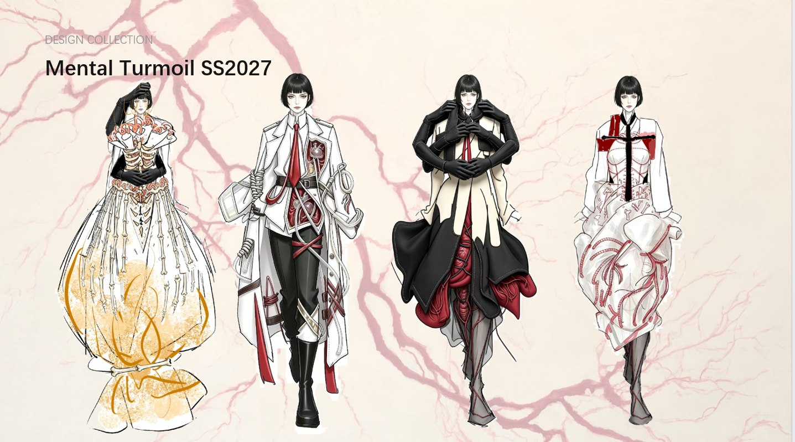
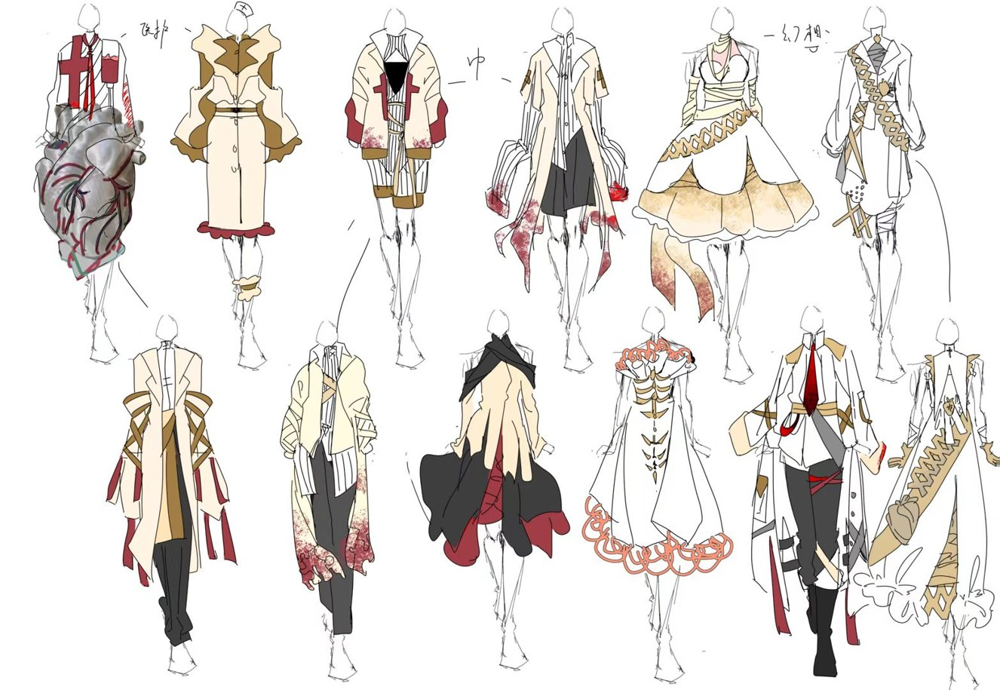
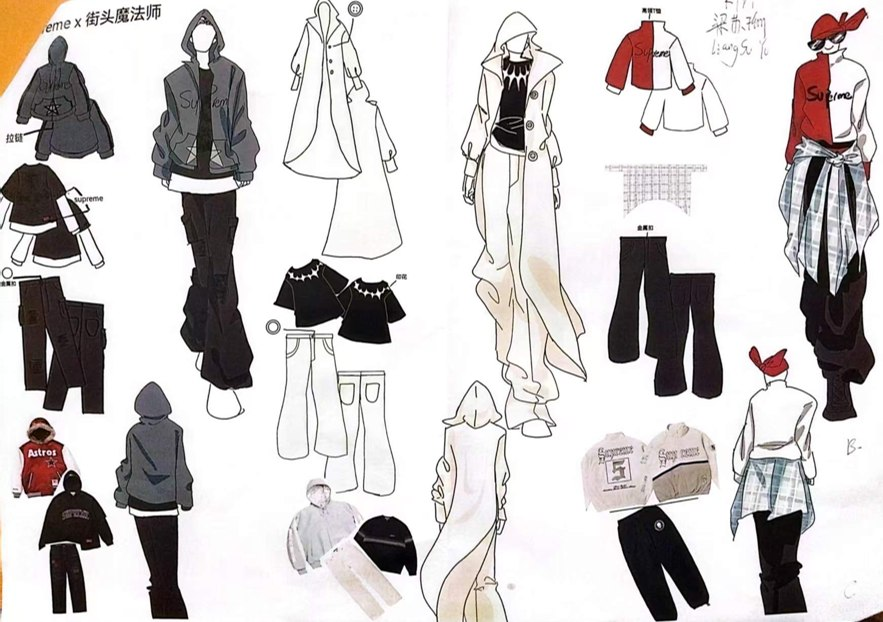
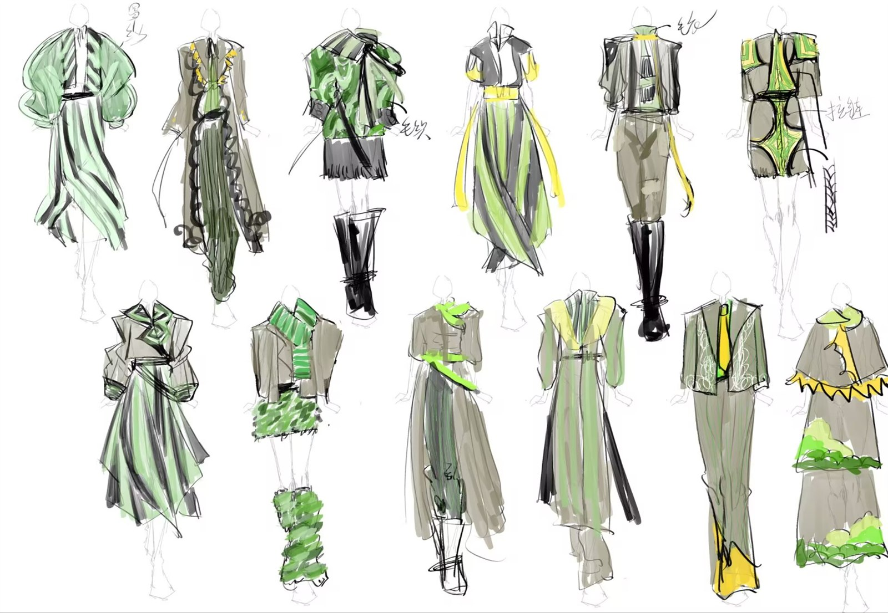
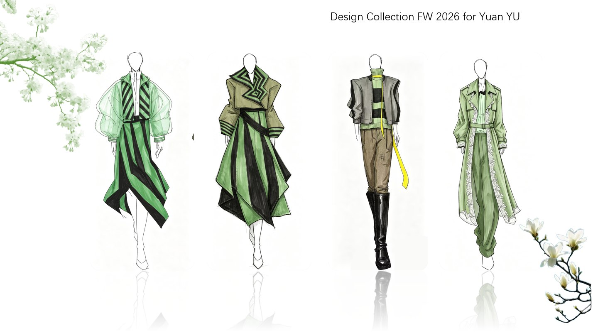
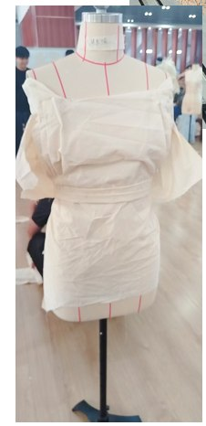
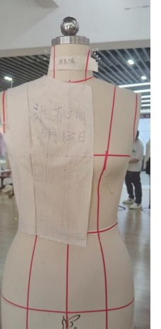
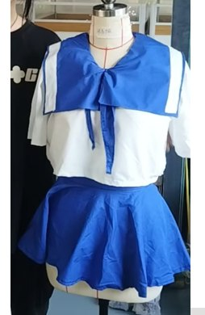
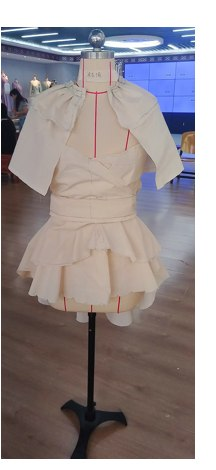
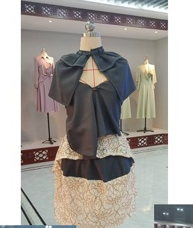
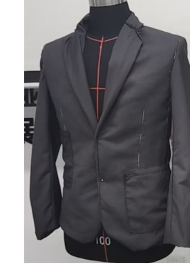
2024.09 — 2027.07
Guangxi Nanning Polytechnic
艺术设计 · 服装方向（专科）Art & Design, Fashion Pathway — College Diploma
艺术设计专业在读，性格踏实，执行强、学得快。习惯把模糊的需求拆成可执行的步骤：先定概念与廓形，再落到版型、尺寸和工艺。对接修改意见时表达直接、反馈及时，多轮返工也能稳住节奏。
Studying art & design. Steady, fast to execute, quick to learn. I break vague briefs into steps — concept and silhouette first, then pattern, measurements and construction — and stay steady through multiple rounds of revision.